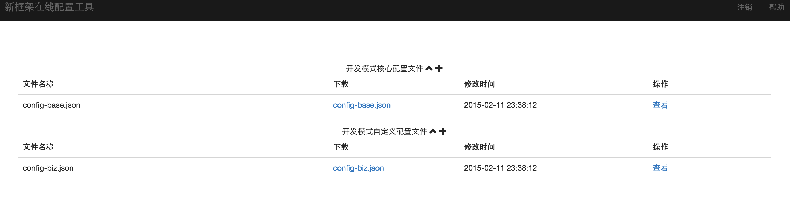
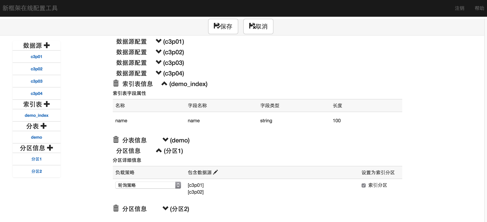

新的在线服务框架-架构概要设计
图盟科技有限公司架构组
图盟科技有限公司架构组
通常状态下，一个公司存在多条产品线的情况下，如果没有一个统一的技术和架构规划，那么这些产品线在技术上往往都会各自为战，采用各自的技术选型处理各自的问题。如果出现这种状况，那么会造成整体的技术方向，技术框架不明确，导致各条产品线出现重复的劳动或者出现底层架构问题无法快速定位解决等一系列问题，这就需要我们开发一套完整的技术架构来支持各个产品线。
新框架的设计就是在这样的背景下设计和开发的。在传统模式下，在开发开发一个产品或者项目时，既需要关注业务，也需要关注使用技术的各个方面，如资源使用，资源配置，资源释放等等问题;也可能在互联网环境下，随着数据的海量增长，单一数据库，或者集群式的单一数据库无法在支撑海量的数据的快速查询;还有可能在某些场景下，在线服务不能停机，需要通过热部署的方式上线新的数据源或者其他配置信息，而传统模式很难做到。新框架解决了这些问题，使用新框架的开发API进行开发，对于在线应用系统只需要关注自己的业务，而不用再去关注资源使用的各种问题，同时提供一套灵活的分库分表机制以及搜索引擎，来解决海量的数据存储和查询问题。通过灵活的注入机制和整合ZooKeeper的方式，来实现数据源等信息的热部署。
传统的在线系统，一般整个项目或者产品采用一个WAR工程作为软件架构，即真正面向前端的Servlet层或者Controller层，和面向后端如各种关系和非关系型数据库等各类后端的Service操作是融合在一起进行的。这样就会造成一些问题，一方面，如果运行时支撑软件运行的中间件出现问题，那么这两层就会同时无法提供服务，使整个系统的可用性、稳定性下降，另一方面，如果不同的项目或者产品之间存在接口调用等需求，那么对于传统的方式能只能靠比较老的技术如WebService等技术进行接口调用，这样实际上也增加了不同项目产品之间的耦合度和复杂度，对于每个需要提供对外系统间调用接口的系统都必须要开发调用接口和保证调用安全性健壮性的机制，这就显得很麻烦。
新框架相比于传统模式，采用了基于阿里云的相关技术，将后端服务Servcie和面向的最终用户的在线服务，做软件层面进行分割，提高整个系统的可用性和稳定性，同时后端Service同前端服务层（Servlet、Controller）分割后，如需要提供跨系统的接口服务，则只需要使用基于阿里云的一些技术，进行简单的配置，将接口暴露出来，就可以安全高效的提供接口，而不需要像传统模式那样去开发。除了解决上述问题，基于阿里云的数据服务RDS等其他服务和新框架的提供的全文检索功能，分表分库等功能，对于整个的系统的稳定性，执行性能，查询效率和容灾性能都会比传统的架构模式有着显著的提高。新框架的软件架构图如下所示：
传统的在线系统，在网络部署架构中，一般采取一个集群带N个Tomcat服务器，后面采用一套数据库进行数据层面的支撑，这样虽然简单，但是在高压力的处理和整个平台的扩展性上存在一些问题。面对日益增长的数据，可能光靠堆机器是无法达到预期的效果的，面对系统间复用接口的需求不断增多等一些其他问题时，会发现扩展起来是件比较麻烦的事情。
新框架为了处理这些网络部署架构问题，采取数据库分库分表，数据库的水平扩展和数据源的热插拔来满足海量数据的要求，通过配置中心，服务中心和搜索中心，来满足日益增加的功能和扩展性需求。新框架的网路架构图如下所示：
对于传统的在线业务来说，往往都是采用单一的数据表进行数据存储，或者根据业务的需求不同，将不同业务的数据分到几个不同的数据库中。这种方式存在一些问题，一方面，随着数据量的显著增长，单一数据库虽然可以通过增加数据库存储的方式进行扩容，但是海量数据下，单表的容量的暴涨将导致查询和更新效率的明显下降；另一方面，虽然在业务中通过写代码的方式对数据进行库的分配分片，或者对数据表进行分表，但是这样就造成任何项目或者产品在关注自身业务逻辑的同时，还不得不考虑项目或者产品的存储逻辑，使用硬编码或者复杂的配置文件进行分区数据操作，这就显得很不灵活，配置性和扩展型都不佳，也很难支持水平数据扩展。
针对上述的分片分库问题，新框架在设计上进行了支持，来解决这些问题。首先，新框架内置的分片分表算法采用相对的平均分配方式按照分片字段来分配数据，这样，就保证了所有数据相对平均的分配到各个数据源上，降低单个数据源的访问压力，减少各个数据表的数据记录数，降低了数据库IO压力，提高了表的SQL执行性能。其次，如果使用默认的分片算法，对于应用来说所有的读写分片上数据的操作都是自动的，应用开发时无需再关注和配置分片逻辑。如果分片的算法不符合应用的要求，也可以很轻松的由应用实现一个新框架分片接口来自定义算法，而不需要复杂的配置工作和硬编码。最后，一般的在线业务来说，基本上的查询都是按照ID，用户，区域等进行查询的，这样单片（单数据源）的查询是非常快的，如果需要跨分片（数据源）查询，新框架也设计实现了跨分片（数据源）查询，并且也支持直接使用基于Lucence的索引来实现快速查询和排序。新框架完成分片分表后，大概的数据结构如下图所示：

一般来说，如果数据库为单一数据库，在一般的开发中，可以很轻松的使用Spring内置的扁平化事务来处理事务，但是如果是多个数据源，如果还是使用Spring内置的Spring的内置的事务管理方式的话，就可能造成本应该处理为一个事务的分布式事务被拆成多个事务，因为每启动一个不同的数据库连接，在不同的调用层次，就可能出现该层次直接被提交的可能，如下图所示：
要处理上述的问题，一个最好的解决方案就是使用JTA数据源和管理器的方式来做跨库事务，新框架也是支持这种事务方式，但是，JTA的跨库事务是比较沉重的选择，是一个強事务过程，分为预提交和提交两个过程，对数据库的驱动也有要求，虽然事务是完全完整的分布式事务，但是对于互联网来说，这个选择会比较沉，性能也会有明显的下降，因此框架支持C3P0这种类似的简单的数据源和管理器方式，通过对事务堆栈（LIFO）的处理来保证一个相对的跨库事务，避免出现Spring内置的扁平化模式的事务在分布式数据源情况下被切分问题，如下图所示
新框架实现的这种简单数据源和管理器的方式，从严格的角度来看，并不是最万无一失的方案，因为当数据最终提交（commit）的时候出了问题的话，会造成一些事物不能回滚，但是对于最终提交出问题这种情况，除非是开发用错或者数据库服务器忽然宕机造成，几率非常低，且对于RDS来说，出问题几率就会更低。因此对于互联网环境，这应该是一个比较完善的分布式事务的轻量级解决方案了。
对于传统的开发，一般来说是由开发人员，自己去配置数据源，然后去自己获取连接，然后使用，提交，关闭连接；或者是使用Spring框架使用JdbcTemplate，Spring整合Hibernate的方式的去由Spring自动管理这些资源。对于大部分开发人员来说，每当开发一个新的应用，就是写DAO，然后注入数据库的相关Bean到DAO。然后再把DAO注入到Service中供Service使用，这看似很简单，但是依然存在着一些注入错误或者一些潜在资源管理问题，尤其是多数据源情况下，代码中可能还要花费额外精力来处理这些问题。
为了让开发人员将精力完全集中在处理业务逻辑上，新框架提供了DAO的注解工具，只需要配置一个注解表明当前DAO是做什么，并返回一个要执行的SQL语句，告知框架这个DAO要处理的SQL是什么，通过入参的注解告知新框架所有入参参数即可，大致的使用模式如下所示：
//作者
@Author("yaming.xu")
//执行的操作
@Select(indexName = "lost_file_read_index", indexColumn = "m.userName")
public Object customSelect1(@SqlParameter("m") Map m,
long others) {
return "select id from agent_task_base where id=#{m.id} and user_name=#{m.userName}";
}
上面的代码段中@Select代表执行查询操作，分片索引表的名称为indexName,分片字段是入参为标记为@SqlParameter("m")的哈希表中的一个key=userName的值，@SqlParameter("m")也可以用来标记List或者JavaBean等，return "select id from agent_task_base where id=#{m.id} and user_name=#{m.userName}";代表要执行的SQL，里面的#{...}代表入参的某个key或者属性,会被框架在内部替换为？，也可以使用${...},会被框架内部替换为变量。
一般情况下，系统中如数据源、自定义的配置信息是在系统启动时候通过配置文件进行加载，如果配置发生变化，改完配置文件，必须重启机器才能完成重新配置。虽然可以使用软硬集群的方式分开重启，但是这样就有可能造成某些业务的逻辑出问题，也可能造成整个系统的可用性能降低。另一方面，使用比较传统的properties配置文件方式，会造成上线时候需要替换本地环境到生产环境的问题，比较麻烦，也很容易出错。
针对这种问题，新框架的分为两个模式，开发模式和生产模式。开发模式下，用户读取由新框架配置工具生成的本地JSON文件配置数据源，分片分表信息，自定义配置信息替换用户使用Spring和properties配置文件的方式进行配置，因为开发模式可以频繁重启，所以开发模式并不打开热部署相关支持。在生产模式下，新框架整合ZooKeeper和javassist相关技术，利用ZooKeeper的长连接的通知机制和javassist的字节码技术，通过新框架提供的在线配置中心管理工具完成数据源的热插拔，自定义信息相关配置的热加载，而无需重启应用，并通过监控确保集群中的每台机器都能成功完成这种更新。对于分片分表的更新，由于这种操作一般都是伴随改代码，所以新框架暂时不支持这种分片分表信息热的部署更新，仍然需要重启后更新。
如果需要使用自定义的配置信息，请在业务代码中使用如下代码
PropertiesConfigUtil.getPropertiesConfigInstance().getProperty("配置KEY")
新框架将支持检测各个部署节点的健康程度，包括配置中心的连接状况，节点自身运行状况等等，数据库节点的使用状况，并且可以通过新框架提供的在线工具显式的监控各个节点的状态，及时发现各类的安全问题，方便进行处置。如果发生某个数据库迁移的状况，新框架也将提供分片的数据迁移工具来进行数据迁移。
新框架支持插件，所有插件将在启动的时候注入到容器，并且能够获得Spring的注册器。这种方式很灵活，可以很轻松的实现用户自定义的功能再启动时候带起来，实现插件全部功能后，只需要写一个配置器就可以实现插件的使用，要使用插件，请在插件完成后，约定建立一个包autonavi.online.framework.support.config，并且实现接口ISupportConfig即可。
新框架会提供一个在线配置工具来配置开发模式和生产模式等一些配置信息，目前开发模式的配置已经制作完成，可以登录到系统中进行相关的配置JSON文件的编辑和下载，下载页面如下图所示：

可以使用数据源，分片，分表的配置工具对配置信息进行配置，并且通过配置工具可以一目了然的看到的所有的基础核心配置信息，方便查找和修改，并生成一个自定义的配置JSON文件，如下图所示:

生成的JOSN文件示例
{
"dataSources": [
"java.util.HashMap",
{
"1": {
"beanClass": "com.mchange.v2.c3p0.ComboPooledDataSource",
"name": "c3p0DataSource1",
"props": [
"java.util.HashMap",
{
"acquireRetryAttempts": "30",
"acquireRetryDelay": "100",
"maxIdleTime": "60",
"testConnectionOnCheckout": "false",
"breakAfterAcquireFailure": "false",
"password": "93f0cb0614",
"acquireIncrement": "100",
"idleConnectionTestPeriod": "60",
"maxPoolSize": "20000",
"maxStatements": "100",
"minPoolSize": "100",
"driverClass": "com.mysql.jdbc.Driver",
"initialPoolSize": "100",
"jdbcUrl": "jdbc:mysql://10.19.3.159:3306/addresscollect?rewriteBatchedStatements=true",
"user": "root"
}
]
},
"2": {
"beanClass": "com.mchange.v2.c3p0.ComboPooledDataSource",
"name": "c3p0DataSource2",
"props": [
"java.util.HashMap",
{
"acquireRetryAttempts": "30",
"acquireRetryDelay": "100",
"maxIdleTime": "60",
"testConnectionOnCheckout": "false",
"breakAfterAcquireFailure": "false",
"password": "93f0cb0614",
"acquireIncrement": "100",
"idleConnectionTestPeriod": "60",
"maxPoolSize": "20000",
"maxStatements": "100",
"minPoolSize": "100",
"driverClass": "com.mysql.jdbc.Driver",
"initialPoolSize": "100",
"jdbcUrl": "jdbc:mysql://10.19.3.160:3306/addresscollect?rewriteBatchedStatements=true",
"user": "root"
}
]
}
}
],
"shardIndex": 1,
"indexTableMap": [
"java.util.HashMap",
{
"demo_index": [
"java.util.ArrayList",
[
{
"name": "name",
"columnType": "string",
"columnName": "name",
"length": 100
}
]
]
}
],
"segmentTables": [
"java.util.ArrayList",
[
{
"name": "demo",
"count": 2
}
]
]
}
自定义配置工具如下所示：

自定义JOSN文件示例
{
"id": "123",
"pushConfig.url": "http://10.13.5.43:28080/pushservice/push"
}
在配置了JSON配置文件，或者配置ZooKeeper相关节点后，需要在Spring的配置文件中，配置一些新框架启动必要的配置，一个配置的例子如下：
<?xml version="1.0" encoding="UTF-8"?>
<beans xmlns="http://www.springframework.org/schema/beans"
xmlns:xsi="http://www.w3.org/2001/XMLSchema-instance" xmlns:dubbo="http://code.alibabatech.com/schema/dubbo"
xmlns:cc="http://www.autonavi.com/schema/configCenter"
xsi:schemaLocation="http://www.springframework.org/schema/beans
http://www.springframework.org/schema/beans/spring-beans.xsd
http://code.alibabatech.com/schema/dubbo
http://code.alibabatech.com/schema/dubbo/dubbo.xsd
http://www.autonavi.com/schema/configCenter
http://www.autonavi.com/schema/configCenter/aof-cc.xsd">
<cc:config>
<!-- <cc:zkConfig address="10.19.2.10:2181,10.19.2.10:2182,10.19.2.10:2183" sessionTimeout="1000" -->
<!-- project="demo" password="123456"></cc:zkConfig> -->
<!-- ZooKeeper配置时使用 -->
<!-- <cc:base ref="zkCC" configJson="/config-base.json"></cc:base> -->
<!-- <cc:biz ref="zkPP"></cc:biz> -->
<cc:base configJson="/config-base.json"></cc:base>
<cc:biz configJson="/config-biz.json"></cc:biz>
</cc:config>
<bean id="zkConfig" class="autonavi.online.framework.support.zookeeper.ZooKeeperProp">
<property name="address">
<value>10.19.2.10:2181,10.19.2.10:2182,10.19.2.10:2183</value>
</property>
<property name="sessionTimeout">
<value>1000</value>
</property>
<property name="projectName">
<value>demo</value>
</property>
<property name="password">
<value>123456</value>
</property>
</bean>
<bean id="zkCC" class="autonavi.online.framework.support.zookeeper.ConfigCenterFromZooKeeper">
<property name="zooKeeperProp" ref="zkConfig"></property>
</bean>
<bean id="zkPP" class="autonavi.online.framework.support.zookeeper.GetPropertiesDataFromZooKeeper">
<property name="zooKeeperProp" ref="zkConfig"></property>
</bean>
</beans>
新框架支持标准的事务模式，配置和Spring的声明式事务类似，但是需要引用框架提供的自定义XSD，一个配置的例子如下
<?xml version="1.0" encoding="UTF-8"?>
<beans xmlns="http://www.springframework.org/schema/beans"
xmlns:xsi="http://www.w3.org/2001/XMLSchema-instance" xmlns:p="http://www.springframework.org/schema/p"
xmlns:context="http://www.springframework.org/schema/context"
xmlns:aop="http://www.springframework.org/schema/aop" xmlns:tx="http://www.autonavi.com/schema/tx"
xmlns:shard="http://www.autonavi.com/schema/shard"
xsi:schemaLocation="http://www.springframework.org/schema/beans
http://www.springframework.org/schema/beans/spring-beans-4.0.xsd
http://www.springframework.org/schema/context
http://www.springframework.org/schema/context/spring-context-4.0.xsd
http://www.springframework.org/schema/aop
http://www.springframework.org/schema/aop/spring-aop-4.0.xsd
http://www.autonavi.com/schema/tx
http://www.autonavi.com/schema/tx/aof-tx.xsd
http://www.autonavi.com/schema/shard
http://www.autonavi.com/schema/shard/aof-shard.xsd">
<!-- 声明式事务管理，注意schema是不一样的，其它基本与spring-tx一样 -->
<tx:advice id="shardingTxAdvice">
<tx:attributes>
<tx:method name="*" isolation="DEFAULT" propagation="REQUIRED"
rollback-for="java.lang.Exception" read-only="false" />
</tx:attributes>
</tx:advice>
<!-- 这里就与一般的声明式事务一样了，把切面指向分片事务管理器即可 -->
<aop:config>
<aop:pointcut id="txPointcut"
expression="execution(public * autonavi.online.framework.test..*Service.*(..))" />
<aop:advisor pointcut-ref="txPointcut" advice-ref="shardingTxAdvice" />
</aop:config>
</beans>
一般模式下，传统的开发模式下都是使用手工拷贝包的方式，这种方式很容易出问题，会造成各种依赖的问题，新框架建议所有的依赖的走Maven依赖方式，通过架构组在公司内网的maven私服进行依赖和打包管理。
在项目的pom.xml文件中的<project/> 中添加来指向私服
<repositories>
<repository>
<id>nexus</id>
<name>Team Nexus Repository</name>
<url>http://10.19.2.9:8081/nexus/content/groups/public</url>
</repository>
</repositories>
<pluginRepositories>
<pluginRepository>
<id>nexus</id>
<name>Team Nexus Repository</name>
<url>http://10.19.2.9:8081/nexus/content/groups/public</url>
</pluginRepository>
</pluginRepositories>
在依赖中使用如下配置依赖新框架的核心和相关插件
<!-- 核心 -->
<dependency>
<groupId>autonavi</groupId>
<artifactId>online.framework.core</artifactId>
<version>0.0.1-SNAPSHOT</version>
<exclusions>
<exclusion>
<groupId>javax.servlet</groupId>
<artifactId>javax.servlet-api</artifactId>
</exclusion>
<exclusion>
<groupId>org.slf4j</groupId>
<artifactId>slf4j-log4j12</artifactId>
</exclusion>
</exclusions>
</dependency>
<!-- 建表工具 -->
<dependency>
<groupId>autonavi</groupId>
<artifactId>online.framework.support.table</artifactId>
<version>0.0.1-SNAPSHOT</version>
</dependency>
<!-- ZooKeeper工具 -->
<dependency>
<groupId>autonavi</groupId>
<artifactId>online.framework.support.zookeeper</artifactId>
<version>0.0.1-SNAPSHOT</version>
</dependency>
查询操作主要用于处理单条数据库的查询，主要使用方式如下,如果使用单一数据源模式@SingleDataSource,将不在处理索引表和索引字段的入参，而是直接使用指定的数据源
@Author("ang.ji")
//单一数据源模式
@SingleDataSource(1)
@Select(indexName = "demo_index", indexColumn = "m.name")
public Object customSelect2(@SqlParameter("m") Map m,
long others) {
return "select id as id from demo where id=#{m.id} and name=#{m.name}";
}
查询返回的默认值是哈希表，Key大小写不敏感。如果需要返回JavaBean 可以使用@Select(indexName = "lost_file_read_index", indexColumn = "m.userName",resultType=YourBean.class)来返回，并且确保查询的参数能够和JavaBean的属性对的上。如果需要返回结果游标ResultSet,使用@Select(indexName = "lost_file_read_index", indexColumn = "m.userName",callbackClass=YourCallBack.class),回调类需要实现接口autonavi.online.framework.jdbc.datasource.ResultSetCallback.
若需要查询进行分页，则按照如下方式写DAO
@Author("ang.ji")
@Select(paging = @Paging(skip = "start", size = "limit"), resultType = Demo.class, indexName = "demo_index", indexColumn = "m.name")
public Object pagingSelect(@SqlParameter("m") Map m,
@SqlParameter("start") long start, @SqlParameter("limit") long limit) {
return "select id from demo where name=#{m.name}";
}
批量查询主要用于跨分片查询，并对各个分片的结果集进行合并，如果使用单一数据源模式@SingleDataSource,将不在处理索引表和索引字段的入参，而是直接使用指定的数据源.返回参数同查询，但是不支持分页。使用方法的如下
@Author("shipeng.hou")
@Select(indexName = "demo_index", indexColumn = "list."
+ ReservedWord.index + ".name")
public Object customBathSelect(@SqlParameter("list") List> list) {
String sql = "select id from demo where name=#{list." + ReservedWord.index+ ".name}";
return sql;
}
插入操作主要用于单条记录的插入，返回插入的数量，主要使用方式如下,如果使用单一数据源模式@SingleDataSource,将不在处理索引表和索引字段的入参，而是直接使用指定的数据源
@Author("shipeng.hou")
@Insert(indexName = "demo_index", indexColumn = "m.name")
public Object customInsert(@SqlParameter("m") Map m,
long others) {
return "insert into demo(id,name) values(#{" + ReservedWord.snowflake
+ "},#{m.name})";
}
ReservedWord.snowflake为系统保留字，系统会生成全集群的唯一主键。如果需要获取这个生成的主键，在记录完成插入后，可以调用如下方法获取，注意，在一个线程中必须执行一条SQL插入获取一个主键。否则会被替换。
DaoHelper.getPrimaryKey();
主要用于更新一条或者一批记录，返回当前更新的记录数量，主要使用方式如下,如果使用单一数据源模式@SingleDataSource,将不在处理索引表和索引字段的入参，而是直接使用指定的数据源
@Author("jia.miao")
@Update(indexName = "lost_file_read_index", indexColumn = "m.userName")
public Object customUpdate1(@SqlParameter("m") Map m) {
return "update lost_file_read set read_flag=#{m.readFlag} where file_name=#{m.fileName}";
}
主要用于删除一条或者一批记录，返回当前删除的记录数量，主要使用方式如下,如果使用单一数据源模式@SingleDataSource,将不在处理索引表和索引字段的入参，而是直接使用指定的数据源
@Author("shipeng.hou")
@Delete(indexName = "demo_index", indexColumn = "m.name")
public Object customDelete(@SqlParameter("m") Map m,
long others) {
return "delete demo where id=#{m.id}";
}
主要用于跨分片插入或者更新，返回按照批量顺序的更新条数数组，但是这个更新条数并不完全准确，因为和数据库驱动相关，仅能作为参考值，主要使用方法如下
@Author("shipeng.hou")
@Insert(indexName = "demo_index", indexColumn = "list."
+ ReservedWord.index + ".name")
public Object customBathInsert(@SqlParameter("list")List> list) {
String sql = "insert into demo(id,name) values (#{"
+ ReservedWord.snowflake + "},#{list." + ReservedWord.index
+ ".name}),";
return sql.substring(0, sql.length() - 1);
}
如果需要获取批量生成的主键，在记录完成插入后，可以调用如下方法获取，注意，在一个线程中必须执行一条SQL插入获取一个主键。否则会被替换。
DaoHelper.getPrimaryKeys();
处理DDLSQL进行建表或者更新表操作,需要引用建表工具插件
@Author("shipeng.hou")
@DDL
public Object process(){
return "create table test ....";
}
处理Hibernate-mapping文件进行建表操作，需要引用建表工具插件
@Author("shipeng.hou")
@Hbm
public Object process(){
return "Hibernate-mapping....";
}
为了提高代码的可读性、可维护性、可追溯性和可扩展性，新框架建议所有基于新框架的开发都基于如下开发规范进行开发，新框架本身的代码也是基于这套规范进行开发。
变量、方法和类名的命名往往会被忽视，虽然随便定义不会造成太大的运行问题，但是在重构或者扩展时候，不标准的命名方式就会导致代码可读性变的非常差，也会导致开发中由于不标准而造成一些莫名奇妙的问题。
Package(包)的命名:Package的名字应该都是由一个小写单词组成,例如
online.autonavi.framework
Class(类)的命名:Class的名字首字母大写,通常由多个单词合成一个类名，要求每个单词的首字母也要大写,例如
public class UserInfoService{
......
}
变量的命名:变量的名字可大小写混用，但首字符应小写。词由大写字母分隔，限制用下划线，限制使用美元符（$），因为这个字符对内部类有特殊的含义。如
private String userName;
Static Final 变量（相当于常量）的命名,Static Final 变量的名字应该都大写，并且指出完整含义，例如：
final MAX_UPLOAD_FILE_SIZE=1024;
方法的命名,方法名的第一个单词应该是动词，大小写可混用，但首字母应小写。在每个方法名内，大写字母将词分隔并限制使用下划线。参数的名字必须和变量的命名规范一致。使用有意义的参数命名，如果可能的话，使用和要赋值的字段一样的名字：
setCounter(int size){
this.size = size;
}
单行(single-line)--单独行注释：在代码中单起一行注释， 注释前最好有一行空行，并与其后的代码具有一样的缩进层级。如果单行无法完成，则应采用块注释。注释格式
/* 注释内容 */
单行(single-line)--行头注释：在代码行的开头进行注释。主要为了使该行代码失去意义。注释格式
// 注释内容
单行(single-line)--行尾注释：尾端(trailing)--极短的注释，在代码行的行尾进行注释。一般与代码行后空8（至少4）个格，所有注释必须对齐。注释格式
代码 + 8（至少4）个空格 + // 注释内容
块(block)--块注释：/*……*/ 注释若干行，通常用于提供文件、方法、数据结构等的意义与用途的说明，或者算法的描述。一般位于一个文件或者一个方法的前面，起到引导的作用，也可以根据需要放在合适的位置。这种域注释不会出现在HTML报告中。注释格式通常写成
/*
* 注释内容
*/
文档注释：/**……*/ 注释若干行，并写入javadoc文档。每个文档注释都会被置于注释定界符 /**......*/之中，注释文档将用来生成HTML格式的代码报告，所以注释文 档必须书写在类、域、构造函数、方法，以及字段(field)定义之前。注释文档由两部分组成——描述、块标记。注释文档的格式如下
/**
* The doGet method of the servlet.
* This method is called when a form has its tag value method
* equals to get.
* @param request
* the request send by the client to the server
* @param response
* the response send by the server to the client
* @throws ServletException
* if an error occurred
* @throws IOException
* if an error occurred
*/
public void doGet (HttpServletRequest request, HttpServletResponse response)
throws ServletException, IOException {
doPost(request, response);
}
代码格式化：一般情况下 有些代码在写完后有些行很长，建议使用编译器的格式化代码功能对代码进行格式化操作，提高代码的可读性，减少协作开发时出现某些格式问题的可能
1.建议在所有业务存在逻辑判断的地方加上足够的日志，便于线上环境出现问题后的调试。
2.建议代码采用UTF-8的编码，避免出现一些中文或者非英语字符集的问题
3.涉及跨平台，跨语言接口调用的参数一定要实现序列化。
4.测试时候尽量使用junit，避免使用主函数的方式去测试，防止出现某些安全隐患。
1.DAO是最小的数据单元，不要使用DAO调用DAO的情况
2.任何SQL中不允许出现*和不等于号的情况，为了提高效率，这是强制规范，否则框架会报错
3.@Author,必须使用，并认真填写作者的名字，方便代码的追溯
1.Service可以调用Service，但是不要使用this的方式调用如果事务传播级别不是REQUIRED，这会造成事务无法传播，请使用如下例子嵌套调用
@Service("demoService")
public class DemoServiceImpl implements DemoService {
@Resource
DemoService demoService;
public void test(){
...
demoService.test1();
...
}
public void test1(){
...
}
}
2.Service必须走接口+实现的方式，保证可以在Dubbo中进行部署。